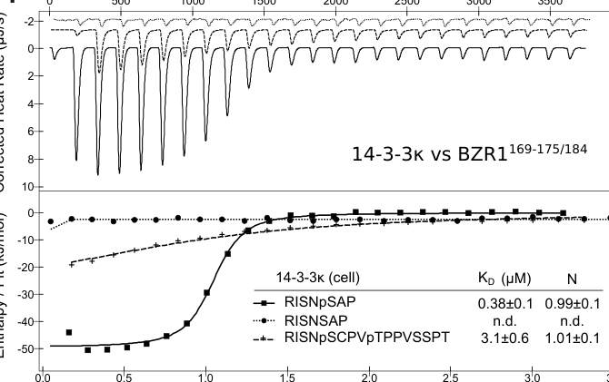

BZR1 (BRASSINAZOLE-RESISTANT 1) is the master transcription factor of the brassinosteroid (BR) signaling pathway in Arabidopsis. It is a plant-specific, atypical bHLH-like protein of the BZR/BES1 family that binds DNA through a non-canonical N-terminal domain, recognizing the BR-response element (BRRE, CGTG(T/C)G) and E-box/G-box (CACGTG) motifs in target-gene promoters. BZR1 functions as a homodimer and regulates thousands of BR-responsive genes, acting predominantly as a transcriptional repressor (notably of feedback-regulated BR biosynthetic genes such as CPD and DWF4) but also as an activator on other promoters. The activity, stability, and nucleocytoplasmic distribution of BZR1 are controlled by phosphorylation. The GSK3-like kinase BIN2 phosphorylates BZR1 to promote its nuclear export, cytoplasmic retention (via 14-3-3 binding) and degradation, whereas BR signaling activates the PP2A/BSU1 phosphatases that dephosphorylate BZR1, allowing it to accumulate in the nucleus and bind DNA. Dephosphorylated, nuclear BZR1 drives BR-induced cell elongation and growth while also mediating negative feedback on BR biosynthesis. Through interaction with other transcription factors (e.g. PIF4, DELLAs, TCPs) BZR1 integrates BR signaling with light, temperature, and gibberellin pathways, and it contributes to developmental processes including hypocotyl elongation, ovule and seed development, and female germline specification.
Definition: A DNA-binding transcription factor activity, dependent on dephosphorylation downstream of brassinosteroid signaling, that regulates transcription of brassinosteroid-responsive genes through binding to the brassinosteroid-response element (BRRE, CGTG(T/C)G).
Justification: BZR1/BES1-family factors define a plant-specific, phosphorylation-gated class of TFs that bind the BRRE element; no existing MF term captures BRRE-element specificity.
Parent term: DNA-binding transcription factor activity
Supporting Evidence:
| GO Term | Evidence | Action | Reason |
|---|---|---|---|
|
GO:0003700
DNA-binding transcription factor activity
|
IEA
GO_REF:0000002 |
ACCEPT |
Summary: BZR1 is a sequence-specific DNA-binding transcription factor of the BZR/BES1 family that recognizes the BRRE and E-box/G-box motifs. This InterPro-based electronic annotation captures the core molecular function and is corroborated by direct experimental evidence.
Reason: Core molecular function, supported by IEA (InterPro IPR033264) and independently by IDA (PMID:21074725) and biochemical work (PMID:15681342).
Supporting Evidence:
PMID:15681342
BZR1 is a transcriptional repressor that has a previously unknown DNA binding domain and binds directly to the promoters of feedback-regulated BR biosynthetic genes.
file:ARATH/BZR1/BZR1-deep-research-falcon.md
It binds BRRE/E-box-associated promoters and can activate or repress BR-responsive genes controlling growth and BR homeostasis
|
|
GO:0005634
nucleus
|
IEA
GO_REF:0000044 |
ACCEPT |
Summary: BZR1 acts in the nucleus, where dephosphorylated BZR1 accumulates to bind target promoters. Nuclear localization is the functional compartment and is well-supported experimentally.
Reason: Core localization; consistent with UniProt subcellular location (Nucleus) and experimental IDA evidence.
Supporting Evidence:
PMID:11970900
BZR1 protein accumulates in the nucleus of elongating cells of dark-grown hypocotyls and is stabilized by BR signaling and the bzr1-1D mutation.
file:ARATH/BZR1/BZR1-deep-research-falcon.md
phosphorylated forms are biased toward cytoplasmic sequestration, while dephosphorylated forms accumulate in the nucleus and drive transcriptional outputs
|
|
GO:0006351
DNA-templated transcription
|
IEA
GO_REF:0000002 |
MODIFY |
Summary: This generic process term (DNA-templated transcription) is the act of transcription itself rather than the regulatory role of BZR1. BZR1 is a sequence-specific regulatory transcription factor, not a component of the basal transcription machinery; the more accurate process is regulation of transcription.
Reason: BZR1 regulates transcription of target genes (acting as repressor/activator) rather than carrying out the transcription reaction. Replace with regulation of DNA-templated transcription.
Proposed replacements:
regulation of DNA-templated transcription
Supporting Evidence:
PMID:21074725
There are 450 BRBT genes activated, 462 repressed, and 41 affected in complex ways by BR, indicating BZR1 can be activator and repressor for different genes.
|
|
GO:0006355
regulation of DNA-templated transcription
|
IEA
GO_REF:0000117 |
ACCEPT |
Summary: BZR1 regulates transcription of thousands of BR-responsive target genes, acting as both repressor and activator. This ARBA electronic annotation correctly captures the regulatory process.
Reason: Accurate, well-supported process term for a transcriptional regulator.
Supporting Evidence:
PMID:21074725
There are 450 BRBT genes activated, 462 repressed, and 41 affected in complex ways by BR, indicating BZR1 can be activator and repressor for different genes.
file:ARATH/BZR1/BZR1-deep-research-falcon.md
It regulates BR-responsive gene expression (activation and repression depending on partners/context), thereby controlling growth programs and BR homeostasis
|
|
GO:0009742
brassinosteroid mediated signaling pathway
|
IEA
GO_REF:0000002 |
ACCEPT |
Summary: BZR1 is the master nuclear effector of the BR signaling pathway, transducing the dephosphorylation signal into BR-responsive gene expression. This is a core process for BZR1.
Reason: Core biological process; matches strong experimental evidence (also annotated IMP from PMID:11970900).
Supporting Evidence:
PMID:11970900
BZR1 is a positive regulator of the BR signaling pathway that mediates both downstream BR responses and feedback regulation of BR biosynthesis.
file:ARATH/BZR1/BZR1-deep-research-falcon.md
acts as a principal nuclear effector of the BR receptor-initiated signaling cascade
|
|
GO:0005515
protein binding
|
IPI
PMID:17681130 An essential role for 14-3-3 proteins in brassinosteroid sig... |
REMOVE |
Summary: This IPI annotation records interaction of BZR1 with 14-3-3 (GRF6) and a GSK3-like kinase (ASK7), regulators of BZR1 stability/localization. The generic protein binding term is uninformative about molecular function.
Reason: GO:0005515 protein binding is non-informative and should be replaced by informative MF terms (DNA binding, repressor activity, TF binding, dimerization) captured elsewhere in this review. The 14-3-3 interaction itself is a regulatory PTM readout, not a defining molecular function of BZR1.
Supporting Evidence:
PMID:17873094
GSK3-like kinases induce the nuclear export of BZR1 by modulating BZR1 interaction with the 14-3-3 proteins.
|
|
GO:0005515
protein binding
|
IPI
PMID:22307275 Brassinosteroid regulates stomatal development by GSK3-media... |
REMOVE |
Summary: Interaction with the GSK3-like kinase BIN2 (ASK7) in the context of BR regulation of stomatal development. Generic protein binding term is uninformative.
Reason: Non-informative MF term. The BIN2-BZR1 relationship is a kinase-substrate regulatory interaction, not a core molecular function descriptor.
Supporting Evidence:
PMID:17873094
GSK3-like kinases induce the nuclear export of BZR1 by modulating BZR1 interaction with the 14-3-3 proteins.
|
|
GO:0005515
protein binding
|
IPI
PMID:22820377 Brassinosteroid, gibberellin and phytochrome impinge on a co... |
REMOVE |
Summary: Records interactions of BZR1 with DELLA proteins (RGL1, GAI, RGA) in a common BR/GA/phytochrome transcription module. Generic protein binding term is uninformative.
Reason: Non-informative MF term. The biologically meaningful aspect (integration with GA signaling via DELLA/TF interactions) is better captured by DNA-binding transcription factor binding (proposed as a NEW term) and the BR signaling process term.
Supporting Evidence:
PMID:22820377
DELLAs directly interacted with BZR1 and inhibited BZR1-DNA binding both in vitro and in vivo.
|
|
GO:0005515
protein binding
|
IPI
PMID:22820378 Interaction between BZR1 and PIF4 integrates brassinosteroid... |
REMOVE |
Summary: Records the well-characterized BZR1-PIF4 (and PIF1) interaction that integrates BR with light/temperature signaling; the two TFs co-bind ~2000 common targets. Although biologically important, the generic protein binding term is uninformative.
Reason: Non-informative MF term. The informative molecular function is BZR1 binding a DNA-binding transcription factor (PIF4); proposed as a NEW GO:0140297 annotation.
Supporting Evidence:
PMID:22820378
BZR1 and PIF4 interact with each other in vitro and in vivo, bind to nearly 2,000 common target genes, and synergistically regulate many of these target genes.
|
|
GO:0005515
protein binding
|
IPI
PMID:28650476 CrY2H-seq: a massively multiplexed assay for deep-coverage i... |
REMOVE |
Summary: High-throughput CrY2H-seq interactome data recording BZR1 interactions with several transcription factors (DELLAs, TCP15/21, TCP13). Generic protein binding term is uninformative.
Reason: Non-informative MF term from a large-scale interactome screen; informative partner-class function (TF binding) captured by proposed GO:0140297.
Supporting Evidence:
PMID:28650476
CrY2H-seq: a massively multiplexed assay for deep-coverage interactome mapping.
|
|
GO:0005515
protein binding
|
IPI
PMID:32612234 Extensive signal integration by the phytohormone protein net... |
REMOVE |
Summary: Large-scale phytohormone protein-protein interaction network recording many BZR1 partners, including numerous TCP transcription factors and DELLAs. Generic protein binding term is uninformative.
Reason: Non-informative MF term from a high-throughput network; informative function (binding DNA-binding TFs) captured by proposed GO:0140297.
Supporting Evidence:
PMID:32612234
Extensive signal integration by the phytohormone protein network.
|
|
GO:0005515
protein binding
|
IPI
PMID:37335918 Plant-specific BLISTER interacts with kinase BIN2 and BRASSI... |
REMOVE |
Summary: Records interaction of BZR1 with the plant-specific BLISTER (BLI) protein, which cooperates with BZR1 to activate BR-responsive genes during skotomorphogenesis. Generic protein binding term is uninformative.
Reason: Non-informative MF term. The cooperative transcriptional activation function is better represented by BZR1's DNA-binding/TF activity terms.
Supporting Evidence:
PMID:37335918
BLI cooperates with the BRASSINAZOLE RESISTANT1 (BZR1) transcription factor to facilitate the transcriptional activation of BR-responsive genes.
|
|
GO:0000987
cis-regulatory region sequence-specific DNA binding
|
IPI
PMID:36748257 Signaling by the EPFL-ERECTA family coordinates female germl... |
ACCEPT |
Summary: BZR1 directly binds the cis-regulatory region (promoter) of NSN1 to activate its expression during female germline specification, demonstrating sequence-specific cis-regulatory DNA binding. This is an informative molecular function consistent with BZR1's role as a sequence-specific TF binding BRRE/E-box motifs.
Reason: Informative, experimentally supported MF term for a sequence-specific DNA-binding TF. The binding/activation of the NSN1 promoter is direct.
Supporting Evidence:
PMID:36748257
BZR1 coordinates female germline specification by directly activating the expression of a nucleolar GTP-binding protein, NUCLEOSTEMIN-LIKE 1 (NSN1).
|
|
GO:0009414
response to water deprivation
|
IMP
PMID:36508461 A role for brassinosteroid signalling in decision-making pro... |
KEEP AS NON CORE |
Summary: This annotation derives from a forward-genetic screen combining light and water withdrawal that identified BR-pathway (primarily BIN2) decision-making mutants. BZR1 acts downstream within the BR pathway; a role in differential growth under water deprivation is a peripheral, pathway-level developmental output rather than a core BZR1 function.
Reason: Peripheral physiological/developmental output of BR signaling; the screen centered on BIN2 alleles, with BZR1 acting within the same pathway. Retain as non-core context.
Supporting Evidence:
PMID:36508461
This identified BRASSINOSTEROID INSENSITIVE 2 (BIN2) alleles as decision mutants with "confused" phenotypes.
|
|
GO:0009416
response to light stimulus
|
IMP
PMID:36508461 A role for brassinosteroid signalling in decision-making pro... |
KEEP AS NON CORE |
Summary: BZR1 contributes to light-modulated differential growth (photomorphogenesis, hypocotyl-versus-root decisions) within the BR pathway, integrating with light signaling (e.g. via PIF4 and HY5 target overlap). This is a peripheral developmental output rather than a core molecular function.
Reason: BR/BZR1 crosstalk with light signaling is well-documented, but light response is a downstream pathway output; retain as non-core.
Supporting Evidence:
PMID:21074725
These results demonstrate that phytochrome and BR pathways antagonistically regulate seedling photomorphogenesis largely by regulating common downstream genes.
|
|
GO:0005634
nucleus
|
ISM
GO_REF:0000122 |
ACCEPT |
Summary: Computational (AtSubP) prediction of nuclear localization, consistent with the functional nuclear localization of BZR1 established experimentally.
Reason: Correct core localization; redundant with experimental IDA nucleus annotation but acceptable.
Supporting Evidence:
PMID:11970900
BZR1 protein accumulates in the nucleus of elongating cells of dark-grown hypocotyls and is stabilized by BR signaling and the bzr1-1D mutation.
|
|
GO:0005515
protein binding
|
IPI
PMID:21258370 PP2A activates brassinosteroid-responsive gene expression an... |
REMOVE |
Summary: Records interaction of BZR1 with PP2A B' regulatory subunits, which dephosphorylate and thereby activate BZR1. Generic protein binding term is uninformative about molecular function.
Reason: Non-informative MF term. The PP2A-BZR1 interaction is a phosphatase-substrate regulatory event, not a defining molecular function of BZR1.
Supporting Evidence:
PMID:17873094
BR-activated phosphatase mediates rapid nuclear localization of BZR1.
|
|
GO:0005515
protein binding
|
IPI
PMID:25663622 Formation and dissociation of the BSS1 protein complex regul... |
REMOVE |
Summary: Records interaction of BZR1 with the BSS1/BOP1 complex, which sequesters BZR1 and regulates BR signaling. Generic protein binding term is uninformative.
Reason: Non-informative MF term; regulatory sequestration interaction, not a core molecular function descriptor.
Supporting Evidence:
PMID:25663622
Formation and dissociation of the BSS1 protein complex regulates plant development via brassinosteroid signaling.
|
|
GO:0003700
DNA-binding transcription factor activity
|
IDA
PMID:21074725 Integration of brassinosteroid signal transduction with the ... |
ACCEPT |
Summary: Direct experimental demonstration (genome-wide ChIP-chip plus binding assays) that BZR1 is a sequence-specific DNA-binding transcription factor regulating hundreds of BR-responsive target genes via BRRE and E-box/G-box motifs. This is the core molecular function.
Reason: Strong IDA support for the core MF; BZR1 binds DNA and regulates transcription of target genes.
Supporting Evidence:
PMID:21074725
BZR1 binds to the BR-response element (BRRE, CGTGT/CG) of BR-repressed genes.
|
|
GO:0048316
seed development
|
IMP
PMID:22914576 BR signal influences Arabidopsis ovule and seed number throu... |
KEEP AS NON CORE |
Summary: BR signaling through BZR1 influences seed number; dephospho-BZR1 level correlates with ovule and seed number, and BZR1 regulates ovule-development genes. This is a downstream developmental output of BZR1's transcriptional activity.
Reason: Developmental output (one of many BR-regulated processes), not the core molecular/biological function; retain as non-core.
Supporting Evidence:
PMID:22914576
the dephosphorylation level of BZR1 is consistent with ovule and seed number.
|
|
GO:0048481
plant ovule development
|
IMP
PMID:22914576 BR signal influences Arabidopsis ovule and seed number throu... |
KEEP AS NON CORE |
Summary: BZR1 modulates ovule initiation and development by regulating expression of ovule-development genes (HLL, ANT, AP2), acting antagonistically with AP2. A downstream developmental output of BZR1.
Reason: Developmental output of BR/BZR1 transcriptional control; retain as non-core.
Supporting Evidence:
PMID:22914576
BR regulates the expression level of genes related to ovule development, including HLL, ANT, and AP2, either directly by targeting the promoter sequences or indirectly via regulation by BR-induced transcription factor BZR1.
|
|
GO:0045892
negative regulation of DNA-templated transcription
|
IDA
PMID:15681342 BZR1 is a transcriptional repressor with dual roles in brass... |
ACCEPT |
Summary: BZR1 is a transcriptional repressor that binds directly to promoters (BRRE) of feedback-regulated BR biosynthetic genes and represses their expression. This is a core, experimentally demonstrated function.
Reason: Core repressor activity directly demonstrated; defining feature of BZR1 (cf. activator BES1).
Supporting Evidence:
PMID:15681342
Here we show that BZR1 is a transcriptional repressor that has a previously unknown DNA binding domain and binds directly to the promoters of feedback-regulated BR biosynthetic genes.
|
|
GO:0006355
regulation of DNA-templated transcription
|
TAS
PMID:11970900 Nuclear-localized BZR1 mediates brassinosteroid-induced grow... |
ACCEPT |
Summary: BZR1 is a transcriptional regulator within the BR pathway. TAS annotation of the general regulation-of-transcription process is accurate, though less specific than the negative-regulation annotation also present.
Reason: Accurate process term, consistent with BZR1's role as a sequence-specific transcriptional regulator.
Supporting Evidence:
PMID:11970900
Nuclear-localized BZR1 mediates brassinosteroid-induced growth and feedback suppression of brassinosteroid biosynthesis.
|
|
GO:0005829
cytosol
|
IDA
PMID:17873094 Nucleocytoplasmic shuttling of BZR1 mediated by phosphorylat... |
KEEP AS NON CORE |
Summary: BZR1 is a nucleocytoplasmic shuttling protein; phosphorylated BZR1 is exported and retained in the cytosol (via 14-3-3 binding). The cytosolic localization is real and experimentally observed, but it represents the inactive/exported pool rather than the compartment where BZR1 performs its transcriptional function.
Reason: Genuine experimental localization, but cytosol corresponds to the inactive sequestered form; nucleus is the functional compartment. Retain as non-core.
Supporting Evidence:
PMID:17873094
We show here that BZR1 functions as a nucleocytoplasmic shuttling protein and GSK3-like kinases induce the nuclear export of BZR1 by modulating BZR1 interaction with the 14-3-3 proteins.
file:ARATH/BZR1/BZR1-deep-research-falcon.md
BIN2-phosphorylated BZR1 is retained more in the cytoplasm through 14-3-3 association, whereas dephosphorylated BZR1 accumulates in the nucleus to regulate transcription
|
|
GO:0003677
DNA binding
|
IDA
PMID:15681342 BZR1 is a transcriptional repressor with dual roles in brass... |
MODIFY |
Summary: BZR1 binds DNA directly through its N-terminal domain, recognizing the BRRE element. The generic DNA binding term is correct but less informative than sequence-specific terms; BZR1 binds a defined cis-regulatory motif.
Reason: BZR1 binds DNA in a sequence-specific manner at cis-regulatory regions (BRRE); replace bare DNA binding with the more informative sequence-specific cis-regulatory region binding term.
Proposed replacements:
transcription cis-regulatory region binding
Supporting Evidence:
PMID:15681342
BZR1 is a transcriptional repressor that has a previously unknown DNA binding domain and binds directly to the promoters of feedback-regulated BR biosynthetic genes.
PMID:21074725
BZR1 binds to the BR-response element (BRRE, CGTGT/CG) of BR-repressed genes.
|
|
GO:0005634
nucleus
|
IDA
PMID:11970900 Nuclear-localized BZR1 mediates brassinosteroid-induced grow... |
ACCEPT |
Summary: Direct experimental evidence that BZR1 localizes to the nucleus, where it accumulates in elongating hypocotyl cells and is stabilized by BR signaling. The nucleus is the functional compartment for BZR1's transcriptional activity.
Reason: Core localization with strong IDA support.
Supporting Evidence:
PMID:11970900
BZR1 protein accumulates in the nucleus of elongating cells of dark-grown hypocotyls and is stabilized by BR signaling and the bzr1-1D mutation.
|
|
GO:0009742
brassinosteroid mediated signaling pathway
|
IMP
PMID:11970900 Nuclear-localized BZR1 mediates brassinosteroid-induced grow... |
ACCEPT |
Summary: Genetic evidence (dominant bzr1-1D suppresses BR-deficient and bri1 phenotypes) establishes BZR1 as the key nuclear effector mediating BR-induced growth and feedback regulation of BR biosynthesis. Core biological process.
Reason: Core process, strongly supported by mutant phenotype analysis (IMP).
Supporting Evidence:
PMID:11970900
A dominant mutation bzr1-1D suppresses BR-deficient and BR-insensitive (bri1) phenotypes and enhances feedback inhibition of BR biosynthesis.
|
|
GO:0001227
DNA-binding transcription repressor activity, RNA polymerase II-specific
|
IDA
PMID:15681342 BZR1 is a transcriptional repressor with dual roles in brass... |
NEW |
Summary: NEW annotation. BZR1 functions as a sequence-specific DNA-binding transcriptional repressor, binding the BRRE element in promoters of BR biosynthetic genes to repress their transcription. This informative molecular-function term captures the repressor activity that the generic DNA-binding TF activity and the process-level negative-regulation terms do not fully specify.
Reason: BZR1's defining biochemical activity is sequence-specific transcriptional repression (distinguishing it from the activator paralog BES1); directly demonstrated by promoter binding and repression of BR biosynthetic genes.
Supporting Evidence:
PMID:15681342
Here we show that BZR1 is a transcriptional repressor that has a previously unknown DNA binding domain and binds directly to the promoters of feedback-regulated BR biosynthetic genes.
PMID:21074725
BZR1 binds to the BR-response element (BRRE, CGTGT/CG) of BR-repressed genes.
|
|
GO:0140297
DNA-binding transcription factor binding
|
IPI
PMID:22820378 Interaction between BZR1 and PIF4 integrates brassinosteroid... |
NEW |
Summary: NEW annotation. BZR1 physically interacts with DNA-binding transcription factors (notably PIF4 and PIF1) to integrate BR with light/temperature signaling; BZR1-PIF4 co-bind ~2000 common targets and synergistically regulate them. BZR1 also binds other TFs (TCPs). This informative MF term replaces the generic protein-binding annotations for its TF partners.
Reason: A defining mode of BZR1 action is heterotypic interaction with other DNA-binding TFs to co-regulate shared targets; informative replacement for several removed GO:0005515 annotations.
Supporting Evidence:
PMID:22820378
BZR1 and PIF4 interact with each other in vitro and in vivo, bind to nearly 2,000 common target genes, and synergistically regulate many of these target genes.
file:ARATH/BZR1/BZR1-deep-research-falcon.md
emphasize BZR1 as an integration node for light, auxin, GA, ethylene, and stress signaling
|
|
GO:0042803
protein homodimerization activity
|
IDA
PMID:30287951 Structural basis for brassinosteroid response by BIL1/BZR1. |
NEW |
Summary: NEW annotation. The crystal structure of the BIL1/BZR1 DNA-binding domain (residues 21-104) in complex with DNA shows that BZR1 binds its target element as a homodimer, and UniProt curates BZR1 as a homodimer. Homodimerization is integral to sequence-specific DNA recognition.
Reason: Structurally demonstrated homodimerization that underlies DNA binding; an informative molecular function not otherwise represented. PMID:30287951 is the X-ray structure paper cited in UniProt; evidence is taken from the UniProt record as the full text was not in cached publications.
Supporting Evidence:
PMID:30287951
X-RAY CRYSTALLOGRAPHY (2.17 ANGSTROMS) OF 21-104 IN COMPLEX WITH DNA, AND HOMODIMERIZATION [UniProt SUBUNIT - Homodimer]
|
Q: Which BZR1 targets are repressed via BRRE homodimer binding versus activated via E-box heterodimer binding with partner TFs, and what determines the switch?
Q: Is the cytosolic pool of BZR1 entirely the phosphorylated/inactive form, or does cytosolic BZR1 have any signaling role beyond being a shuttling intermediate?
The research report should be a detailed narrative explaining the function, biological processes, and localization of the gene product. Citations should be given for all claims.
You should prioritize authoritative reviews and primary scientific literature when conducting research. You can supplement
this with annotations you find in gene/protein databases, but these can be outdated or inaccurate.
We are specifically interested in the primary function of the gene - for enzymes, what reaction is catalyzed, and what is the substrate specificity? For transporters, what is the substrate? For structural proteins or adapters, what is the broader structural role? For signaling molecules, what is the role in the pathway.
We are interested in where in or outside the cell the gene product carries out its function.
We are also interested in the signaling or biochemical pathways in which the gene functions. We are less interested in broad pleiotropic effects, except where these elucidate the precise role.
Include evidence where possible. We are interested in both experimental evidence as well as inference from structure, evolution, or bioinformatic analysis. Precise studies should be prioritized over high-throughput, where available.
The research target is Arabidopsis thaliana BRASSINAZOLE-RESISTANT 1 (BZR1), a core brassinosteroid (BR) signaling transcription factor studied extensively in Arabidopsis BR literature, distinct from “BZR” family genes in other plant species and from any unrelated similarly named loci. Recent Arabidopsis-focused studies explicitly describe BZR1/BES1 as downstream BR transcription factors regulated by BIN2 phosphorylation and 14-3-3 association, confirming the match to the UniProt description for Q8S307 (obergfell2024mechanisticinsightsinto pages 1-4, cao2024interactionofthe pages 1-2).
BZR1 is a brassinosteroid-regulated transcription factor that acts as a principal nuclear effector of the BR receptor-initiated signaling cascade, together with the closely related family member BES1. It regulates BR-responsive gene expression (activation and repression depending on partners/context), thereby controlling growth programs and BR homeostasis (cao2024interactionofthe pages 9-11, cao2024interactionofthe pages 1-2).
Authoritative synthesis (2024) frames BZR1/BES1 as “master” BR transcription factors whose outputs are tuned by post-translational modifications (PTMs) and protein interactions controlling subcellular localization, stability, and transcriptional activity (poppenberger2024brassinosteroidsinfocus. pages 4-5).
In the canonical BR pathway, BR perception at the plasma membrane by the BRI1/BAK1 receptor complex is relayed through a phosphorylation network culminating in regulation of BZR1 phosphorylation status. In the absence of BR output, the GSK3-like kinase BIN2 phosphorylates BZR1, restricting its nuclear activity and promoting cytoplasmic retention and/or degradation; conversely, BR signaling promotes PP2A-dependent dephosphorylation and activation of BZR1, enabling BR-responsive transcription (obergfell2024mechanisticinsightsinto pages 1-4, cao2024interactionofthe pages 1-2).
A central concept is that BZR1 functions as a phosphorylation-controlled nucleocytoplasmic shuttling transcription factor: phosphorylated forms are biased toward cytoplasmic sequestration, while dephosphorylated forms accumulate in the nucleus and drive transcriptional outputs (obergfell2024mechanisticinsightsinto pages 1-4, obergfell2024mechanisticinsightsinto pages 23-25).
A key mechanistic element of this localization control is binding by 14-3-3 proteins, which recognize phosphorylated motifs on BR pathway components including BZR1 and act overall as negative regulators of BR signaling (obergfell2024mechanisticinsightsinto pages 1-4, poppenberger2024brassinosteroidsinfocus. pages 4-4).
A major recent advance is the mechanistic dissection of 14-3-3 binding motifs in Arabidopsis BZR1 using quantitative ligand binding and structural biology. Obergfell et al. (Plant & Cell Physiology, 2024; posted 2023-10-13; https://doi.org/10.1101/2023.10.13.562204) mapped a minimal 14-3-3-binding phosphomotif in BZR1 (RISNpSAP; residues 169–175), with binding strictly dependent on phosphorylation at the BIN2-targeted serine, and showed BZR1 binds 14-3-3 as a canonical type II phosphomotif (obergfell2024mechanisticinsightsinto pages 4-7).
Quantitatively, this core phosphorylated BZR1 peptide binds 14-3-3κ with KD ~0.5 µM and 2:2 stoichiometry, and kinetic measurements indicate a short complex lifetime (~1 s), consistent with highly dynamic regulation of BZR1 localization and activity (obergfell2024mechanisticinsightsinto pages 4-7). The figure evidence retrieved from this paper captures the ITC binding and KD values (obergfell2024mechanisticinsightsinto media e0269d28, obergfell2024mechanisticinsightsinto media a54f28eb).
A 2023 Science Advances study (Yu et al., 2023-01; https://doi.org/10.1126/sciadv.ade2493) provided a concrete mechanistic bridge between auxin signaling and BZR1 localization. The authors found auxin-driven hypocotyl elongation depends on BZR1 and that auxin promotes BZR1 nuclear accumulation through MPK3/MPK6-mediated regulation of GRF4, a 14-3-3 protein that otherwise retains BZR1 in the cytoplasm (yu2023auxinpromoteshypocotyl pages 10-11). This is a strong example of how environmental/hormonal cues feed into the BR pathway at the level of BZR1 subcellular partitioning.
Because BIN2 is a primary upstream kinase controlling BZR1 phosphorylation, defining BIN2 substrates and interactors helps refine BZR1 functional annotation. Kim et al. (The Plant Cell, 2023-01; https://doi.org/10.1093/plcell/koad013) used TurboID proximity labeling plus phosphoproteomics to map BIN2’s signaling network and recovered BZR1 as a canonical BIN2-associated substrate (kim2023mappingthesignaling pages 1-2).
The dataset is notable for its scale: 482 BIN2-proximal proteins were identified; integrated evidence supported BIN2-dependent phosphorylation for 344 (71%) of these, and 216 (45%) were considered high-confidence (supported by ≥2 studies) (kim2023mappingthesignaling pages 10-11). This strengthens the view that the BIN2→BZR1 module sits within a much broader PTM network connecting BR signaling to diverse cellular processes.
A 2024 perspective/editorial in Plant & Cell Physiology (Poppenberger et al., 2024-10; https://doi.org/10.1093/pcp/pcae112) emphasizes that BZR1/BES1 outputs are tuned by multiple PTMs (phosphorylation, ubiquitination, SUMOylation, oxidation) and by interactions controlling nucleocytoplasmic shuttling and stability, highlighting dynamic spatial regulation (including scaffold-mediated control of BIN2 localization) as a key frontier (poppenberger2024brassinosteroidsinfocus. pages 4-5).
Although BZR1 itself is an Arabidopsis model-gene, the BR–BIN2–BZR1/BES1 regulatory logic is widely conserved and is actively discussed as a target for crop improvement.
A 2024 review focusing on BES1/BZR1 interactors explicitly frames the BES1/BZR1 interactome as a source of actionable targets for crop improvement via gene editing or molecular breeding (Cao et al., IJMS, 2024-06; https://doi.org/10.3390/ijms25136836) (cao2024interactionofthe pages 1-2). The review highlights modules proposed to improve productivity and pathogen resistance simultaneously, including evidence that cytoplasmic accumulation of mutant BZR1 can enhance pathogen resistance without growth penalty in specific contexts (cao2024interactionofthe pages 8-9).
A 2024 horticulture-focused review notes real-world use of exogenous brassinosteroids/analogs (e.g., epibrassinolide) to improve tolerance to abiotic stresses (cold, drought, salinity, heat) across several horticultural crops, while also emphasizing the need to deepen mechanistic understanding of BR signal transduction to better translate to genetics-based approaches (Gao et al., 2024-10; https://doi.org/10.1007/s44281-024-00050-7) (gao2024brassinolidessignalingpathway pages 1-2).
A 2023 review of plant GSK3-like kinases (including BIN2) emphasizes their role as signaling hubs controlling BES1/BZR1 and stresses opportunities for engineering stress-resilient crops by manipulating this kinase network (Song et al., Frontiers in Plant Science, 2023-03; https://doi.org/10.3389/fpls.2023.1123436) (song2023regulatorynetworkof pages 1-2).
Across 2024 sources, there is broad expert consensus that BZR1/BES1 are central transcriptional hubs whose manipulation can unlock yield and stress tolerance, but that pleiotropy and tradeoffs are persistent challenges because these TFs control extensive gene networks and are influenced by many PTMs/interactors (poppenberger2024brassinosteroidsinfocus. pages 4-5, cao2024interactionofthe pages 1-2). The prevailing expert recommendation is to focus on context- and tissue-specific modulation of BR outputs (e.g., via pathway components, interactors, localization regulators) rather than indiscriminate activation, to achieve agronomically favorable outcomes while minimizing unintended phenotypes (cao2024interactionofthe pages 8-9, cao2024interactionofthe pages 1-2).
Obergfell et al. (2024) report that the phosphorylated BZR1 motif (pBZR1 169–175) binds 14-3-3κ with KD ~0.5 µM and fast dissociation (estimated complex lifetime ~1 s), providing a quantitative basis for dynamic BZR1 sequestration/trafficking models (obergfell2024mechanisticinsightsinto pages 4-7). Figure panels showing these ITC-derived KD values were retrieved (obergfell2024mechanisticinsightsinto media e0269d28, obergfell2024mechanisticinsightsinto media a54f28eb).
Kim et al. (2023) identified 482 BIN2-proximal proteins via TurboID proximity labeling, with integrated evidence supporting BIN2-dependent phosphorylation for 344 (71%) of them and defining 216 (45%) as high-confidence substrates supported by at least two studies (kim2023mappingthesignaling pages 10-11). These numbers contextualize BZR1 regulation as part of a large kinase-centered PTM network.
Yu et al. (2023) describe the Arabidopsis 14-3-3 family as 13 members in the context of BZR1 cytoplasmic retention, and they map MPK3/6 phosphorylation of GRF4 at S248, linking auxin signaling to BZR1 nuclear accumulation through regulated 14-3-3 availability (yu2023auxinpromoteshypocotyl pages 10-11).
| Aspect | Concise summary | Key quantitative details |
|---|---|---|
| Functional role in BR signaling | Arabidopsis BZR1 (At1g75080; UniProt Q8S307) is the canonical BRASSINAZOLE-RESISTANT 1 transcription factor in the BZR/BES1 family, acting downstream of BRI1/BAK1 as a phosphorylation-regulated nuclear effector of brassinosteroid (BR) signaling. It binds BRRE/E-box-associated promoters and can activate or repress BR-responsive genes controlling growth and BR homeostasis (cao2024interactionofthe pages 9-11, fan2018characterizationofbrassinazole pages 1-2, chen2019bzr1familytranscription pages 2-3, cao2024interactionofthe pages 1-2). | Loss of the broader BZR family in Arabidopsis causes near-complete BR insensitivity; recent family genetics support that BZR proteins are indispensable and partly redundant BR outputs (chen2019bzr1familytranscription pages 2-3). |
| Key regulators and PTMs | BIN2 phosphorylates BZR1, reducing DNA-binding/nuclear activity and favoring cytoplasmic sequestration and degradation; PP2A dephosphorylates/activates BZR1; 14-3-3 proteins bind phosphorylated BZR1 as negative regulators; additional control occurs through ubiquitination/proteasomal turnover and other PTMs including SUMOylation and oxidation (obergfell2024mechanisticinsightsinto pages 1-4, poppenberger2024brassinosteroidsinfocus. pages 4-5, cao2024interactionofthe pages 9-11, cao2024interactionofthe pages 1-2). | 2024 structural/biophysical work mapped the minimal BZR1 14-3-3-binding phosphomotif to residues 169–175 (RISNpSAP) centered on pSer173, with high-affinity binding in the submicromolar range (obergfell2024mechanisticinsightsinto pages 4-7, obergfell2024mechanisticinsightsinto media e0269d28). |
| Localization control | BZR1 function depends on phosphorylation-controlled nucleocytoplasmic shuttling: BIN2-phosphorylated BZR1 is retained more in the cytoplasm through 14-3-3 association, whereas dephosphorylated BZR1 accumulates in the nucleus to regulate transcription. Recent reviews also emphasize scaffold-mediated localization control and dynamic compartmentalization as a central regulatory layer (obergfell2024mechanisticinsightsinto pages 23-25, poppenberger2024brassinosteroidsinfocus. pages 4-5, obergfell2024mechanisticinsightsinto pages 1-4, cao2024interactionofthe pages 1-2). | For the BZR1 core phosphopeptide, 14-3-3 binding showed an estimated complex lifetime of only ~1 s, consistent with highly dynamic localization control (obergfell2024mechanisticinsightsinto pages 4-7). |
| 2023 mechanistic advance: BIN2 network mapping | TurboID proximity labeling plus phosphoproteomics greatly expanded the upstream regulatory context of BZR1 by mapping the BIN2 signaling network, validating BZR1 as a canonical BIN2-proximal substrate and showing that BIN2 regulates broad cellular modules beyond the classical BR core pathway (kim2023mappingthesignaling pages 10-11, kim2023mappingthesignaling pages 1-2, kim2023mappingthesignaling pages 3-5, kim2023mappingthesignaling pages 7-8). | 482 BIN2-proximal proteins identified; 169 (35%) showed bikinin-induced dephosphorylation in this dataset; integrated evidence supported BIN2-dependent phosphorylation for 344 (71%) of the proximal proteins, with 216 (45%) considered high-confidence by support from ≥2 studies (kim2023mappingthesignaling pages 10-11, kim2023mappingthesignaling pages 1-2). |
| 2023 mechanistic advance: auxin crosstalk | A 2023 Science Advances study showed that auxin promotes hypocotyl elongation by increasing BZR1 nuclear accumulation through MPK3/MPK6-dependent phosphorylation and destabilization of GRF4, a 14-3-3 family member that otherwise helps retain BZR1 outside the nucleus. This provides a direct mechanistic bridge from auxin signaling to BZR1 localization/output (lu2025understandingthebrassinosteroiddependent pages 13-15, yu2023auxinpromoteshypocotyl pages 10-11). | The study notes the Arabidopsis 14-3-3 family has 13 members and used pharmacological/genetic perturbations to show MPK3/6-dependent control of BZR1 nuclear accumulation via GRF4 S248 phosphorylation (yu2023auxinpromoteshypocotyl pages 10-11). |
| 2024 mechanistic advance: 14-3-3 motif mapping | 2024 work resolved how 14-3-3 proteins recognize BZR1 at the molecular level, showing that BZR1 binds 14-3-3s through a canonical type II phosphomotif and that non-ε 14-3-3 isoforms show little preference for the BZR1 core motif. This strengthens the model that phospho-BZR1 sequestration is structurally encoded (obergfell2024mechanisticinsightsinto pages 1-4, poppenberger2024brassinosteroidsinfocus. pages 4-4, obergfell2024mechanisticinsightsinto pages 4-7, obergfell2024mechanisticinsightsinto media e0269d28). | KD ~0.5 µM by ITC/GCI for pBZR1(169–175); extended peptide 169–184 reduced binding by ~10-fold; structures were solved to 2.8 Å, 3.5 Å, 2.35 Å, and 1.90 Å depending on construct/complex (obergfell2024mechanisticinsightsinto pages 4-7, obergfell2024mechanisticinsightsinto media e0269d28). |
| 2024 expert synthesis/current understanding | 2024 expert reviews converge on BZR1/BES1 as multilayer-controlled master BR transcription factors whose activity is tuned by phosphorylation, ubiquitination, SUMOylation, oxidation, protein interactors, and subcellular trafficking. These reviews also emphasize BZR1 as an integration node for light, auxin, GA, ethylene, and stress signaling (poppenberger2024brassinosteroidsinfocus. pages 4-5, cao2024interactionofthe pages 11-12, cao2024interactionofthe pages 1-2, cao2024interactionofthe pages 2-4). | Reviews highlight that BZR1/BES1 regulate thousands of genes and that practical engineering will likely require tissue- or stage-specific modulation rather than bulk pathway activation (poppenberger2024brassinosteroidsinfocus. pages 4-5, cao2024interactionofthe pages 8-9, cao2024interactionofthe pages 1-2). |
| Translational implications | Although Arabidopsis BZR1 itself is a model-gene target, recent reviews argue that manipulating BZR1/BES1, BIN2/GSK3 modules, or BZR1 interactors is promising for crop improvement, especially for balancing growth, yield, and stress resilience. Proposed implementations include gene editing/molecular breeding and precision, tissue-specific BR-pathway engineering (cao2024interactionofthe pages 8-9, cao2024interactionofthe pages 9-11, song2023regulatorynetworkof pages 1-2, gao2024brassinolidessignalingpathway pages 1-2, cao2024interactionofthe pages 1-2). | Review-level examples include targeting BR modules to improve productivity and pathogen resistance together, and using precision BR engineering rather than broad pathway activation to avoid pleiotropic costs (cao2024interactionofthe pages 8-9, vukasinovic2025unlockingthepotential pages 1-3, song2023regulatorynetworkof pages 1-2). |
Table: This table condenses the verified role of Arabidopsis BZR1 in brassinosteroid signaling, emphasizing regulation by BIN2, PP2A, 14-3-3 proteins, and other PTMs. It also highlights the most important 2023–2024 mechanistic advances and quantitative data useful for a research report.
References
(obergfell2024mechanisticinsightsinto pages 1-4): Elsa Obergfell, Ulrich Hohmann, Andrea Moretti, and Michael Hothorn. Mechanistic insights into the function of 14-3-3 proteins as negative regulators of brassinosteroid signaling in arabidopsis. Plant and Cell Physiology, 65:1674-1688, Oct 2024. URL: https://doi.org/10.1101/2023.10.13.562204, doi:10.1101/2023.10.13.562204. This article has 10 citations and is from a domain leading peer-reviewed journal.
(cao2024interactionofthe pages 1-2): Xuehua Cao, Yanni Wei, Biaodi Shen, Linchuan Liu, and Juan Mao. Interaction of the transcription factors bes1/bzr1 in plant growth and stress response. International Journal of Molecular Sciences, 25:6836, Jun 2024. URL: https://doi.org/10.3390/ijms25136836, doi:10.3390/ijms25136836. This article has 28 citations.
(cao2024interactionofthe pages 9-11): Xuehua Cao, Yanni Wei, Biaodi Shen, Linchuan Liu, and Juan Mao. Interaction of the transcription factors bes1/bzr1 in plant growth and stress response. International Journal of Molecular Sciences, 25:6836, Jun 2024. URL: https://doi.org/10.3390/ijms25136836, doi:10.3390/ijms25136836. This article has 28 citations.
(poppenberger2024brassinosteroidsinfocus. pages 4-5): Brigitte Poppenberger, Eugenia Russinova, and Sigal Savaldi-Goldstein. Brassinosteroids in focus. Plant & cell physiology, 65:1495-1499, Oct 2024. URL: https://doi.org/10.1093/pcp/pcae112, doi:10.1093/pcp/pcae112. This article has 6 citations and is from a domain leading peer-reviewed journal.
(obergfell2024mechanisticinsightsinto pages 23-25): Elsa Obergfell, Ulrich Hohmann, Andrea Moretti, and Michael Hothorn. Mechanistic insights into the function of 14-3-3 proteins as negative regulators of brassinosteroid signaling in arabidopsis. Plant and Cell Physiology, 65:1674-1688, Oct 2024. URL: https://doi.org/10.1101/2023.10.13.562204, doi:10.1101/2023.10.13.562204. This article has 10 citations and is from a domain leading peer-reviewed journal.
(poppenberger2024brassinosteroidsinfocus. pages 4-4): Brigitte Poppenberger, Eugenia Russinova, and Sigal Savaldi-Goldstein. Brassinosteroids in focus. Plant & cell physiology, 65:1495-1499, Oct 2024. URL: https://doi.org/10.1093/pcp/pcae112, doi:10.1093/pcp/pcae112. This article has 6 citations and is from a domain leading peer-reviewed journal.
(obergfell2024mechanisticinsightsinto pages 4-7): Elsa Obergfell, Ulrich Hohmann, Andrea Moretti, and Michael Hothorn. Mechanistic insights into the function of 14-3-3 proteins as negative regulators of brassinosteroid signaling in arabidopsis. Plant and Cell Physiology, 65:1674-1688, Oct 2024. URL: https://doi.org/10.1101/2023.10.13.562204, doi:10.1101/2023.10.13.562204. This article has 10 citations and is from a domain leading peer-reviewed journal.
(obergfell2024mechanisticinsightsinto media e0269d28): Elsa Obergfell, Ulrich Hohmann, Andrea Moretti, and Michael Hothorn. Mechanistic insights into the function of 14-3-3 proteins as negative regulators of brassinosteroid signaling in arabidopsis. Plant and Cell Physiology, 65:1674-1688, Oct 2024. URL: https://doi.org/10.1101/2023.10.13.562204, doi:10.1101/2023.10.13.562204. This article has 10 citations and is from a domain leading peer-reviewed journal.
(obergfell2024mechanisticinsightsinto media a54f28eb): Elsa Obergfell, Ulrich Hohmann, Andrea Moretti, and Michael Hothorn. Mechanistic insights into the function of 14-3-3 proteins as negative regulators of brassinosteroid signaling in arabidopsis. Plant and Cell Physiology, 65:1674-1688, Oct 2024. URL: https://doi.org/10.1101/2023.10.13.562204, doi:10.1101/2023.10.13.562204. This article has 10 citations and is from a domain leading peer-reviewed journal.
(yu2023auxinpromoteshypocotyl pages 10-11): Zipeng Yu, Jinxin Ma, Mengyue Zhang, Xiaoxuan Li, Yi Sun, Mengxin Zhang, and Zhaojun Ding. Auxin promotes hypocotyl elongation by enhancing bzr1 nuclear accumulation in arabidopsis. Science Advances, Jan 2023. URL: https://doi.org/10.1126/sciadv.ade2493, doi:10.1126/sciadv.ade2493. This article has 79 citations and is from a highest quality peer-reviewed journal.
(kim2023mappingthesignaling pages 1-2): Tae-Wuk Kim, Chan Ho Park, Chuan-Chih Hsu, Yeong-Woo Kim, Yeong-Woo Ko, Zhenzhen Zhang, Jia-Ying Zhu, Yu-Chun Hsiao, Tess Branon, Krista Kaasik, Evan Saldivar, Kevin Li, Asher Pasha, Nicholas J Provart, Alma L Burlingame, Shou-Ling Xu, Alice Y Ting, and Zhi-Yong Wang. Mapping the signaling network of bin2 kinase using turboid-mediated biotin labeling and phosphoproteomics. The Plant Cell, 35:975-993, Jan 2023. URL: https://doi.org/10.1093/plcell/koad013, doi:10.1093/plcell/koad013. This article has 111 citations.
(kim2023mappingthesignaling pages 10-11): Tae-Wuk Kim, Chan Ho Park, Chuan-Chih Hsu, Yeong-Woo Kim, Yeong-Woo Ko, Zhenzhen Zhang, Jia-Ying Zhu, Yu-Chun Hsiao, Tess Branon, Krista Kaasik, Evan Saldivar, Kevin Li, Asher Pasha, Nicholas J Provart, Alma L Burlingame, Shou-Ling Xu, Alice Y Ting, and Zhi-Yong Wang. Mapping the signaling network of bin2 kinase using turboid-mediated biotin labeling and phosphoproteomics. The Plant Cell, 35:975-993, Jan 2023. URL: https://doi.org/10.1093/plcell/koad013, doi:10.1093/plcell/koad013. This article has 111 citations.
(cao2024interactionofthe pages 8-9): Xuehua Cao, Yanni Wei, Biaodi Shen, Linchuan Liu, and Juan Mao. Interaction of the transcription factors bes1/bzr1 in plant growth and stress response. International Journal of Molecular Sciences, 25:6836, Jun 2024. URL: https://doi.org/10.3390/ijms25136836, doi:10.3390/ijms25136836. This article has 28 citations.
(gao2024brassinolidessignalingpathway pages 1-2): Yanlong Gao, Xiaolan Ma, Zhongxing Zhang, Xiaoya Wang, and Yanxiu Wang. Brassinolides signaling pathway: tandem response to plant hormones and regulation under various abiotic stresses. Horticulture Advances, Oct 2024. URL: https://doi.org/10.1007/s44281-024-00050-7, doi:10.1007/s44281-024-00050-7. This article has 25 citations.
(song2023regulatorynetworkof pages 1-2): Yun Song, Ying Wang, Qianqian Yu, Yueying Sun, Jianling Zhang, Jiasui Zhan, and Maozhi Ren. Regulatory network of gsk3-like kinases and their role in plant stress response. Frontiers in Plant Science, Mar 2023. URL: https://doi.org/10.3389/fpls.2023.1123436, doi:10.3389/fpls.2023.1123436. This article has 19 citations.
(fan2018characterizationofbrassinazole pages 1-2): Chunjie Fan, Guangsheng Guo, Huifang Yan, Zhenfei Qiu, Qianyu Liu, and Bingshan Zeng. Characterization of brassinazole resistant (bzr) gene family and stress induced expression in eucalyptus grandis. Physiology and Molecular Biology of Plants, 24:821-831, Jun 2018. URL: https://doi.org/10.1007/s12298-018-0543-2, doi:10.1007/s12298-018-0543-2. This article has 30 citations and is from a peer-reviewed journal.
(chen2019bzr1familytranscription pages 2-3): Lian-Ge Chen, Zhihua Gao, Zhiying Zhao, Xinye Liu, Yongpeng Li, Yuxiang Zhang, Xigang Liu, Yu Sun, and Wenqiang Tang. Bzr1 family transcription factors function redundantly and indispensably in br signaling but exhibit bri1-independent function in regulating anther development in arabidopsis. Molecular plant, Oct 2019. URL: https://doi.org/10.1016/j.molp.2019.06.006, doi:10.1016/j.molp.2019.06.006. This article has 137 citations and is from a highest quality peer-reviewed journal.
(kim2023mappingthesignaling pages 3-5): Tae-Wuk Kim, Chan Ho Park, Chuan-Chih Hsu, Yeong-Woo Kim, Yeong-Woo Ko, Zhenzhen Zhang, Jia-Ying Zhu, Yu-Chun Hsiao, Tess Branon, Krista Kaasik, Evan Saldivar, Kevin Li, Asher Pasha, Nicholas J Provart, Alma L Burlingame, Shou-Ling Xu, Alice Y Ting, and Zhi-Yong Wang. Mapping the signaling network of bin2 kinase using turboid-mediated biotin labeling and phosphoproteomics. The Plant Cell, 35:975-993, Jan 2023. URL: https://doi.org/10.1093/plcell/koad013, doi:10.1093/plcell/koad013. This article has 111 citations.
(kim2023mappingthesignaling pages 7-8): Tae-Wuk Kim, Chan Ho Park, Chuan-Chih Hsu, Yeong-Woo Kim, Yeong-Woo Ko, Zhenzhen Zhang, Jia-Ying Zhu, Yu-Chun Hsiao, Tess Branon, Krista Kaasik, Evan Saldivar, Kevin Li, Asher Pasha, Nicholas J Provart, Alma L Burlingame, Shou-Ling Xu, Alice Y Ting, and Zhi-Yong Wang. Mapping the signaling network of bin2 kinase using turboid-mediated biotin labeling and phosphoproteomics. The Plant Cell, 35:975-993, Jan 2023. URL: https://doi.org/10.1093/plcell/koad013, doi:10.1093/plcell/koad013. This article has 111 citations.
(lu2025understandingthebrassinosteroiddependent pages 13-15): Zhenni Lu, Changrui Ma, Yuzhen Xie, Yuqing Zeng, Jiashi Peng, Dinggang Zhou, and Jinfeng Wu. Understanding the brassinosteroid-dependent environmental adaption in brassicaceae plants. Plants, 14:1554, May 2025. URL: https://doi.org/10.3390/plants14101554, doi:10.3390/plants14101554. This article has 4 citations.
(cao2024interactionofthe pages 11-12): Xuehua Cao, Yanni Wei, Biaodi Shen, Linchuan Liu, and Juan Mao. Interaction of the transcription factors bes1/bzr1 in plant growth and stress response. International Journal of Molecular Sciences, 25:6836, Jun 2024. URL: https://doi.org/10.3390/ijms25136836, doi:10.3390/ijms25136836. This article has 28 citations.
(cao2024interactionofthe pages 2-4): Xuehua Cao, Yanni Wei, Biaodi Shen, Linchuan Liu, and Juan Mao. Interaction of the transcription factors bes1/bzr1 in plant growth and stress response. International Journal of Molecular Sciences, 25:6836, Jun 2024. URL: https://doi.org/10.3390/ijms25136836, doi:10.3390/ijms25136836. This article has 28 citations.
(vukasinovic2025unlockingthepotential pages 1-3): Nemanja Vukašinović, Trevor M. Nolan, and Eugenia Russinova. Unlocking the potential of brassinosteroids: a path to precision plant engineering. Science, 390:eadu9798, Nov 2025. URL: https://doi.org/10.1126/science.adu9798, doi:10.1126/science.adu9798. This article has 9 citations and is from a highest quality peer-reviewed journal.

All of these are generic "protein binding" (GO:0005515) IPI annotations from IntAct/TAIR. They are real interactions but uninformative as MF terms; the informative functions are captured by DNA binding / repressor activity / TF binding / dimerization:
- PMID:17681130 — 14-3-3 (GRF6/P48349) and ASK7/Q39011. Regulatory (14-3-3 sequestration).
- PMID:22307275 — BIN2/ASK7 (Q39011); BR regulates stomatal development via GSK3-mediated MAPK inhibition. Kinase-substrate.
- PMID:22820377 — DELLAs RGL1 (Q9C8Y3), GAI (Q9LQT8), RGA (Q9SLH3); BR/GA/phytochrome common transcription module. BZR1 interacts with DELLA proteins (GA signaling).
- PMID:22820378 — PIF1 (Q8GZM7), PIF4 (Q8W2F3); BZR1-PIF4 integrate BR and environmental signals, bind ~2000 common targets, synergistic PMID:22820378. → DNA-binding TF binding.
- PMID:28650476 — CrY2H-seq interactome: RGL1, TCP15 (Q9C9L2), TCP21 (Q9FTA2), GAI, TCP13 (Q9S7W5). High-throughput.
- PMID:32612234 — phytohormone protein network (large-scale Y2H): BEL1, At3g51180, TCP15, At5g47790, ANAC094, HHO3, TCP21, MYB21, GAI, MGH6.1, TCP16, TCP3, TCP13, RGA. Many TFs.
- PMID:37335918 — BLISTER (BLI, AT3G23980) interacts with BIN2 and BZR1; BLI cooperates with BZR1 to activate BR-responsive genes in skotomorphogenesis.
- PMID:21258370 — PP2A B' subunits (O04375, O04376, Q9LU89, Q8LF36). Phosphatase-substrate.
- PMID:25663622 — BSS1/BOP1 (AT3G57130) complex; BSS1 sequesters BZR1.
Note: Many partners are DNA-binding TFs (PIF1/PIF4, TCP3/13/15/16/21, MYB21, DELLAs are not classic DNA binders but PIFs/TCPs/MYB are) → supports GO:0140297 DNA-binding transcription factor binding as a NEW informative MF.
The Falcon deep research report (file:ARATH/BZR1/BZR1-deep-research-falcon.md) corroborates and extends the existing review. Key points used as supported_by evidence:
- Core MF/activator-repressor role: "It binds BRRE/E-box-associated promoters and can activate or repress BR-responsive genes controlling growth and BR homeostasis" — supports GO:0003700 and the regulation-of-transcription terms.
- BR signaling pathway role: BZR1 "acts as a principal nuclear effector of the BR receptor-initiated signaling cascade" — supports GO:0009742.
- Localization switch: "phosphorylated forms are biased toward cytoplasmic sequestration, while dephosphorylated forms accumulate in the nucleus and drive transcriptional outputs"; and "BIN2-phosphorylated BZR1 is retained more in the cytoplasm through 14-3-3 association, whereas dephosphorylated BZR1 accumulates in the nucleus to regulate transcription" — supports nucleus (core) and cytosol (non-core, inactive exported pool).
- Signal integration: reviews "emphasize BZR1 as an integration node for light, auxin, GA, ethylene, and stress signaling" — supports GO:0140297 (DNA-binding TF binding) NEW term.
New mechanistic detail not previously captured (recorded here, not added as GO annotations because no new verifiable GO ID is warranted):
- 14-3-3 recognition is structurally defined: minimal phosphomotif at BZR1 residues 169–175 (RISNpSAP) centered on pSer173, binding 14-3-3κ with KD ~0.5 µM, 2:2 stoichiometry, complex lifetime ~1 s (Obergfell et al. 2024, Plant & Cell Physiology; doi:10.1093/pcp/pcae112-era / bioRxiv 2023.10.13.562204).
- Auxin promotes BZR1 nuclear accumulation via MPK3/MPK6-dependent phosphorylation/destabilization of GRF4 (a 14-3-3) at S248 (Yu et al. 2023, Science Advances, doi:10.1126/sciadv.ade2493).
- BIN2 proximity network (TurboID + phosphoproteomics): 482 BIN2-proximal proteins, BZR1 recovered as a canonical BIN2 substrate (Kim et al. 2023, Plant Cell, doi:10.1093/plcell/koad013).
- BZR1 family is redundant and indispensable for BR signaling (Chen et al. 2019, Mol Plant).
No UNDECIDED annotations existed; none required resolution. No new GO annotation was added from the deep research because the new mechanistic findings (14-3-3 KD, auxin/MPK crosstalk, BIN2 network) concern upstream regulation rather than a new verifiable BZR1 GO molecular function/process/component not already represented.
id: Q8S307
gene_symbol: BZR1
product_type: PROTEIN
status: DRAFT
taxon:
id: NCBITaxon:3702
label: Arabidopsis thaliana
description: |-
BZR1 (BRASSINAZOLE-RESISTANT 1) is the master transcription factor of the
brassinosteroid (BR) signaling pathway in Arabidopsis. It is a plant-specific,
atypical bHLH-like protein of the BZR/BES1 family that binds DNA through a
non-canonical N-terminal domain, recognizing the BR-response element (BRRE,
CGTG(T/C)G) and E-box/G-box (CACGTG) motifs in target-gene promoters. BZR1
functions as a homodimer and regulates thousands of BR-responsive genes, acting
predominantly as a transcriptional repressor (notably of feedback-regulated BR
biosynthetic genes such as CPD and DWF4) but also as an activator on other
promoters. The activity, stability, and nucleocytoplasmic distribution of BZR1
are controlled by phosphorylation. The GSK3-like kinase BIN2 phosphorylates
BZR1 to promote its nuclear export, cytoplasmic retention (via 14-3-3 binding)
and degradation, whereas BR signaling activates the PP2A/BSU1 phosphatases that
dephosphorylate BZR1, allowing it to accumulate in the nucleus and bind DNA.
Dephosphorylated, nuclear BZR1 drives BR-induced cell elongation and growth
while also mediating negative feedback on BR biosynthesis. Through interaction
with other transcription factors (e.g. PIF4, DELLAs, TCPs) BZR1 integrates BR
signaling with light, temperature, and gibberellin pathways, and it contributes
to developmental processes including hypocotyl elongation, ovule and seed
development, and female germline specification.
existing_annotations:
- term:
id: GO:0003700
label: DNA-binding transcription factor activity
evidence_type: IEA
original_reference_id: GO_REF:0000002
qualifier: enables
review:
summary: BZR1 is a sequence-specific DNA-binding transcription factor of the BZR/BES1
family that recognizes the BRRE and E-box/G-box motifs. This InterPro-based electronic
annotation captures the core molecular function and is corroborated by direct
experimental evidence.
action: ACCEPT
reason: Core molecular function, supported by IEA (InterPro IPR033264) and independently
by IDA (PMID:21074725) and biochemical work (PMID:15681342).
supported_by:
- reference_id: PMID:15681342
supporting_text: BZR1 is a transcriptional repressor that has a previously unknown
DNA binding domain and binds directly to the promoters of feedback-regulated BR
biosynthetic genes.
- reference_id: file:ARATH/BZR1/BZR1-deep-research-falcon.md
supporting_text: It binds BRRE/E-box-associated promoters and can activate or repress
BR-responsive genes controlling growth and BR homeostasis
- term:
id: GO:0005634
label: nucleus
evidence_type: IEA
original_reference_id: GO_REF:0000044
qualifier: located_in
review:
summary: BZR1 acts in the nucleus, where dephosphorylated BZR1 accumulates to bind
target promoters. Nuclear localization is the functional compartment and is
well-supported experimentally.
action: ACCEPT
reason: Core localization; consistent with UniProt subcellular location (Nucleus) and
experimental IDA evidence.
supported_by:
- reference_id: PMID:11970900
supporting_text: BZR1 protein accumulates in the nucleus of elongating cells of
dark-grown hypocotyls and is stabilized by BR signaling and the bzr1-1D mutation.
- reference_id: file:ARATH/BZR1/BZR1-deep-research-falcon.md
supporting_text: phosphorylated forms are biased toward cytoplasmic sequestration,
while dephosphorylated forms accumulate in the nucleus and drive transcriptional
outputs
- term:
id: GO:0006351
label: DNA-templated transcription
evidence_type: IEA
original_reference_id: GO_REF:0000002
qualifier: involved_in
review:
summary: This generic process term (DNA-templated transcription) is the act of
transcription itself rather than the regulatory role of BZR1. BZR1 is a sequence-specific
regulatory transcription factor, not a component of the basal transcription machinery;
the more accurate process is regulation of transcription.
action: MODIFY
reason: BZR1 regulates transcription of target genes (acting as repressor/activator)
rather than carrying out the transcription reaction. Replace with regulation of
DNA-templated transcription.
proposed_replacement_terms:
- id: GO:0006355
label: regulation of DNA-templated transcription
supported_by:
- reference_id: PMID:21074725
supporting_text: There are 450 BRBT genes activated, 462 repressed, and 41 affected
in complex ways by BR, indicating BZR1 can be activator and repressor for different
genes.
- term:
id: GO:0006355
label: regulation of DNA-templated transcription
evidence_type: IEA
original_reference_id: GO_REF:0000117
qualifier: involved_in
review:
summary: BZR1 regulates transcription of thousands of BR-responsive target genes,
acting as both repressor and activator. This ARBA electronic annotation correctly
captures the regulatory process.
action: ACCEPT
reason: Accurate, well-supported process term for a transcriptional regulator.
supported_by:
- reference_id: PMID:21074725
supporting_text: There are 450 BRBT genes activated, 462 repressed, and 41 affected
in complex ways by BR, indicating BZR1 can be activator and repressor for different
genes.
- reference_id: file:ARATH/BZR1/BZR1-deep-research-falcon.md
supporting_text: It regulates BR-responsive gene expression (activation and repression
depending on partners/context), thereby controlling growth programs and BR homeostasis
- term:
id: GO:0009742
label: brassinosteroid mediated signaling pathway
evidence_type: IEA
original_reference_id: GO_REF:0000002
qualifier: involved_in
review:
summary: BZR1 is the master nuclear effector of the BR signaling pathway, transducing
the dephosphorylation signal into BR-responsive gene expression. This is a core
process for BZR1.
action: ACCEPT
reason: Core biological process; matches strong experimental evidence (also annotated
IMP from PMID:11970900).
supported_by:
- reference_id: PMID:11970900
supporting_text: BZR1 is a positive regulator of the BR signaling pathway that
mediates both downstream BR responses and feedback regulation of BR biosynthesis.
- reference_id: file:ARATH/BZR1/BZR1-deep-research-falcon.md
supporting_text: acts as a principal nuclear effector of the BR receptor-initiated
signaling cascade
- term:
id: GO:0005515
label: protein binding
evidence_type: IPI
original_reference_id: PMID:17681130
qualifier: enables
review:
summary: This IPI annotation records interaction of BZR1 with 14-3-3 (GRF6) and a
GSK3-like kinase (ASK7), regulators of BZR1 stability/localization. The generic
protein binding term is uninformative about molecular function.
action: REMOVE
reason: GO:0005515 protein binding is non-informative and should be replaced by
informative MF terms (DNA binding, repressor activity, TF binding, dimerization)
captured elsewhere in this review. The 14-3-3 interaction itself is a regulatory PTM
readout, not a defining molecular function of BZR1.
supported_by:
- reference_id: PMID:17873094
supporting_text: GSK3-like kinases induce the nuclear export of BZR1 by modulating
BZR1 interaction with the 14-3-3 proteins.
- term:
id: GO:0005515
label: protein binding
evidence_type: IPI
original_reference_id: PMID:22307275
qualifier: enables
review:
summary: Interaction with the GSK3-like kinase BIN2 (ASK7) in the context of BR
regulation of stomatal development. Generic protein binding term is uninformative.
action: REMOVE
reason: Non-informative MF term. The BIN2-BZR1 relationship is a kinase-substrate
regulatory interaction, not a core molecular function descriptor.
supported_by:
- reference_id: PMID:17873094
supporting_text: GSK3-like kinases induce the nuclear export of BZR1 by modulating
BZR1 interaction with the 14-3-3 proteins.
- term:
id: GO:0005515
label: protein binding
evidence_type: IPI
original_reference_id: PMID:22820377
qualifier: enables
review:
summary: Records interactions of BZR1 with DELLA proteins (RGL1, GAI, RGA) in a common
BR/GA/phytochrome transcription module. Generic protein binding term is uninformative.
action: REMOVE
reason: Non-informative MF term. The biologically meaningful aspect (integration with
GA signaling via DELLA/TF interactions) is better captured by DNA-binding transcription
factor binding (proposed as a NEW term) and the BR signaling process term.
supported_by:
- reference_id: PMID:22820377
supporting_text: DELLAs directly interacted with BZR1 and inhibited BZR1-DNA
binding both in vitro and in vivo.
- term:
id: GO:0005515
label: protein binding
evidence_type: IPI
original_reference_id: PMID:22820378
qualifier: enables
review:
summary: Records the well-characterized BZR1-PIF4 (and PIF1) interaction that integrates
BR with light/temperature signaling; the two TFs co-bind ~2000 common targets.
Although biologically important, the generic protein binding term is uninformative.
action: REMOVE
reason: Non-informative MF term. The informative molecular function is BZR1 binding a
DNA-binding transcription factor (PIF4); proposed as a NEW GO:0140297 annotation.
supported_by:
- reference_id: PMID:22820378
supporting_text: BZR1 and PIF4 interact with each other in vitro and in vivo, bind
to nearly 2,000 common target genes, and synergistically regulate many of these
target genes.
- term:
id: GO:0005515
label: protein binding
evidence_type: IPI
original_reference_id: PMID:28650476
qualifier: enables
review:
summary: High-throughput CrY2H-seq interactome data recording BZR1 interactions with
several transcription factors (DELLAs, TCP15/21, TCP13). Generic protein binding term
is uninformative.
action: REMOVE
reason: Non-informative MF term from a large-scale interactome screen; informative
partner-class function (TF binding) captured by proposed GO:0140297.
supported_by:
- reference_id: PMID:28650476
supporting_text: 'CrY2H-seq: a massively multiplexed assay for deep-coverage
interactome mapping.'
- term:
id: GO:0005515
label: protein binding
evidence_type: IPI
original_reference_id: PMID:32612234
qualifier: enables
review:
summary: Large-scale phytohormone protein-protein interaction network recording many
BZR1 partners, including numerous TCP transcription factors and DELLAs. Generic
protein binding term is uninformative.
action: REMOVE
reason: Non-informative MF term from a high-throughput network; informative function
(binding DNA-binding TFs) captured by proposed GO:0140297.
supported_by:
- reference_id: PMID:32612234
supporting_text: Extensive signal integration by the phytohormone protein network.
- term:
id: GO:0005515
label: protein binding
evidence_type: IPI
original_reference_id: PMID:37335918
qualifier: enables
review:
summary: Records interaction of BZR1 with the plant-specific BLISTER (BLI) protein,
which cooperates with BZR1 to activate BR-responsive genes during skotomorphogenesis.
Generic protein binding term is uninformative.
action: REMOVE
reason: Non-informative MF term. The cooperative transcriptional activation function
is better represented by BZR1's DNA-binding/TF activity terms.
supported_by:
- reference_id: PMID:37335918
supporting_text: BLI cooperates with the BRASSINAZOLE RESISTANT1 (BZR1) transcription
factor to facilitate the transcriptional activation of BR-responsive genes.
- term:
id: GO:0000987
label: cis-regulatory region sequence-specific DNA binding
evidence_type: IPI
original_reference_id: PMID:36748257
qualifier: enables
review:
summary: BZR1 directly binds the cis-regulatory region (promoter) of NSN1 to activate
its expression during female germline specification, demonstrating sequence-specific
cis-regulatory DNA binding. This is an informative molecular function consistent with
BZR1's role as a sequence-specific TF binding BRRE/E-box motifs.
action: ACCEPT
reason: Informative, experimentally supported MF term for a sequence-specific DNA-binding
TF. The binding/activation of the NSN1 promoter is direct.
supported_by:
- reference_id: PMID:36748257
supporting_text: BZR1 coordinates female germline specification by directly activating
the expression of a nucleolar GTP-binding protein, NUCLEOSTEMIN-LIKE 1 (NSN1).
- term:
id: GO:0009414
label: response to water deprivation
evidence_type: IMP
original_reference_id: PMID:36508461
qualifier: acts_upstream_of_or_within
review:
summary: This annotation derives from a forward-genetic screen combining light and water
withdrawal that identified BR-pathway (primarily BIN2) decision-making mutants. BZR1
acts downstream within the BR pathway; a role in differential growth under water
deprivation is a peripheral, pathway-level developmental output rather than a core
BZR1 function.
action: KEEP_AS_NON_CORE
reason: Peripheral physiological/developmental output of BR signaling; the screen
centered on BIN2 alleles, with BZR1 acting within the same pathway. Retain as
non-core context.
supported_by:
- reference_id: PMID:36508461
supporting_text: This identified BRASSINOSTEROID INSENSITIVE 2 (BIN2) alleles as
decision mutants with "confused" phenotypes.
- term:
id: GO:0009416
label: response to light stimulus
evidence_type: IMP
original_reference_id: PMID:36508461
qualifier: acts_upstream_of_or_within
review:
summary: BZR1 contributes to light-modulated differential growth (photomorphogenesis,
hypocotyl-versus-root decisions) within the BR pathway, integrating with light
signaling (e.g. via PIF4 and HY5 target overlap). This is a peripheral developmental
output rather than a core molecular function.
action: KEEP_AS_NON_CORE
reason: BR/BZR1 crosstalk with light signaling is well-documented, but light response
is a downstream pathway output; retain as non-core.
supported_by:
- reference_id: PMID:21074725
supporting_text: These results demonstrate that phytochrome and BR pathways
antagonistically regulate seedling photomorphogenesis largely by regulating common
downstream genes.
- term:
id: GO:0005634
label: nucleus
evidence_type: ISM
original_reference_id: GO_REF:0000122
qualifier: located_in
review:
summary: Computational (AtSubP) prediction of nuclear localization, consistent with the
functional nuclear localization of BZR1 established experimentally.
action: ACCEPT
reason: Correct core localization; redundant with experimental IDA nucleus annotation
but acceptable.
supported_by:
- reference_id: PMID:11970900
supporting_text: BZR1 protein accumulates in the nucleus of elongating cells of
dark-grown hypocotyls and is stabilized by BR signaling and the bzr1-1D mutation.
- term:
id: GO:0005515
label: protein binding
evidence_type: IPI
original_reference_id: PMID:21258370
qualifier: enables
review:
summary: Records interaction of BZR1 with PP2A B' regulatory subunits, which
dephosphorylate and thereby activate BZR1. Generic protein binding term is
uninformative about molecular function.
action: REMOVE
reason: Non-informative MF term. The PP2A-BZR1 interaction is a phosphatase-substrate
regulatory event, not a defining molecular function of BZR1.
supported_by:
- reference_id: PMID:17873094
supporting_text: BR-activated phosphatase mediates rapid nuclear localization of BZR1.
- term:
id: GO:0005515
label: protein binding
evidence_type: IPI
original_reference_id: PMID:25663622
qualifier: enables
review:
summary: Records interaction of BZR1 with the BSS1/BOP1 complex, which sequesters BZR1
and regulates BR signaling. Generic protein binding term is uninformative.
action: REMOVE
reason: Non-informative MF term; regulatory sequestration interaction, not a core
molecular function descriptor.
supported_by:
- reference_id: PMID:25663622
supporting_text: Formation and dissociation of the BSS1 protein complex regulates
plant development via brassinosteroid signaling.
- term:
id: GO:0003700
label: DNA-binding transcription factor activity
evidence_type: IDA
original_reference_id: PMID:21074725
qualifier: enables
review:
summary: Direct experimental demonstration (genome-wide ChIP-chip plus binding assays)
that BZR1 is a sequence-specific DNA-binding transcription factor regulating hundreds
of BR-responsive target genes via BRRE and E-box/G-box motifs. This is the core
molecular function.
action: ACCEPT
reason: Strong IDA support for the core MF; BZR1 binds DNA and regulates transcription
of target genes.
supported_by:
- reference_id: PMID:21074725
supporting_text: BZR1 binds to the BR-response element (BRRE, CGTGT/CG) of BR-repressed
genes.
- term:
id: GO:0048316
label: seed development
evidence_type: IMP
original_reference_id: PMID:22914576
qualifier: acts_upstream_of_or_within
review:
summary: BR signaling through BZR1 influences seed number; dephospho-BZR1 level
correlates with ovule and seed number, and BZR1 regulates ovule-development genes.
This is a downstream developmental output of BZR1's transcriptional activity.
action: KEEP_AS_NON_CORE
reason: Developmental output (one of many BR-regulated processes), not the core
molecular/biological function; retain as non-core.
supported_by:
- reference_id: PMID:22914576
supporting_text: the dephosphorylation level of BZR1 is consistent with ovule and
seed number.
- term:
id: GO:0048481
label: plant ovule development
evidence_type: IMP
original_reference_id: PMID:22914576
qualifier: acts_upstream_of_or_within
review:
summary: BZR1 modulates ovule initiation and development by regulating expression of
ovule-development genes (HLL, ANT, AP2), acting antagonistically with AP2. A
downstream developmental output of BZR1.
action: KEEP_AS_NON_CORE
reason: Developmental output of BR/BZR1 transcriptional control; retain as non-core.
supported_by:
- reference_id: PMID:22914576
supporting_text: BR regulates the expression level of genes related to ovule
development, including HLL, ANT, and AP2, either directly by targeting the promoter
sequences or indirectly via regulation by BR-induced transcription factor BZR1.
- term:
id: GO:0045892
label: negative regulation of DNA-templated transcription
evidence_type: IDA
original_reference_id: PMID:15681342
qualifier: acts_upstream_of_or_within
review:
summary: BZR1 is a transcriptional repressor that binds directly to promoters (BRRE)
of feedback-regulated BR biosynthetic genes and represses their expression. This is a
core, experimentally demonstrated function.
action: ACCEPT
reason: Core repressor activity directly demonstrated; defining feature of BZR1 (cf.
activator BES1).
supported_by:
- reference_id: PMID:15681342
supporting_text: Here we show that BZR1 is a transcriptional repressor that has a
previously unknown DNA binding domain and binds directly to the promoters of
feedback-regulated BR biosynthetic genes.
- term:
id: GO:0006355
label: regulation of DNA-templated transcription
evidence_type: TAS
original_reference_id: PMID:11970900
qualifier: acts_upstream_of_or_within
review:
summary: BZR1 is a transcriptional regulator within the BR pathway. TAS annotation of
the general regulation-of-transcription process is accurate, though less specific than
the negative-regulation annotation also present.
action: ACCEPT
reason: Accurate process term, consistent with BZR1's role as a sequence-specific
transcriptional regulator.
supported_by:
- reference_id: PMID:11970900
supporting_text: Nuclear-localized BZR1 mediates brassinosteroid-induced growth and
feedback suppression of brassinosteroid biosynthesis.
- term:
id: GO:0005829
label: cytosol
evidence_type: IDA
original_reference_id: PMID:17873094
qualifier: located_in
review:
summary: BZR1 is a nucleocytoplasmic shuttling protein; phosphorylated BZR1 is exported
and retained in the cytosol (via 14-3-3 binding). The cytosolic localization is real
and experimentally observed, but it represents the inactive/exported pool rather than
the compartment where BZR1 performs its transcriptional function.
action: KEEP_AS_NON_CORE
reason: Genuine experimental localization, but cytosol corresponds to the inactive
sequestered form; nucleus is the functional compartment. Retain as non-core.
supported_by:
- reference_id: PMID:17873094
supporting_text: We show here that BZR1 functions as a nucleocytoplasmic shuttling
protein and GSK3-like kinases induce the nuclear export of BZR1 by modulating BZR1
interaction with the 14-3-3 proteins.
- reference_id: file:ARATH/BZR1/BZR1-deep-research-falcon.md
supporting_text: BIN2-phosphorylated BZR1 is retained more in the cytoplasm through
14-3-3 association, whereas dephosphorylated BZR1 accumulates in the nucleus to
regulate transcription
- term:
id: GO:0003677
label: DNA binding
evidence_type: IDA
original_reference_id: PMID:15681342
qualifier: enables
review:
summary: BZR1 binds DNA directly through its N-terminal domain, recognizing the BRRE
element. The generic DNA binding term is correct but less informative than
sequence-specific terms; BZR1 binds a defined cis-regulatory motif.
action: MODIFY
reason: BZR1 binds DNA in a sequence-specific manner at cis-regulatory regions (BRRE);
replace bare DNA binding with the more informative sequence-specific cis-regulatory
region binding term.
proposed_replacement_terms:
- id: GO:0000976
label: transcription cis-regulatory region binding
supported_by:
- reference_id: PMID:15681342
supporting_text: BZR1 is a transcriptional repressor that has a previously unknown
DNA binding domain and binds directly to the promoters of feedback-regulated BR
biosynthetic genes.
- reference_id: PMID:21074725
supporting_text: BZR1 binds to the BR-response element (BRRE, CGTGT/CG) of BR-repressed
genes.
- term:
id: GO:0005634
label: nucleus
evidence_type: IDA
original_reference_id: PMID:11970900
qualifier: located_in
review:
summary: Direct experimental evidence that BZR1 localizes to the nucleus, where it
accumulates in elongating hypocotyl cells and is stabilized by BR signaling. The
nucleus is the functional compartment for BZR1's transcriptional activity.
action: ACCEPT
reason: Core localization with strong IDA support.
supported_by:
- reference_id: PMID:11970900
supporting_text: BZR1 protein accumulates in the nucleus of elongating cells of
dark-grown hypocotyls and is stabilized by BR signaling and the bzr1-1D mutation.
- term:
id: GO:0009742
label: brassinosteroid mediated signaling pathway
evidence_type: IMP
original_reference_id: PMID:11970900
qualifier: acts_upstream_of_or_within
review:
summary: Genetic evidence (dominant bzr1-1D suppresses BR-deficient and bri1 phenotypes)
establishes BZR1 as the key nuclear effector mediating BR-induced growth and feedback
regulation of BR biosynthesis. Core biological process.
action: ACCEPT
reason: Core process, strongly supported by mutant phenotype analysis (IMP).
supported_by:
- reference_id: PMID:11970900
supporting_text: A dominant mutation bzr1-1D suppresses BR-deficient and BR-insensitive
(bri1) phenotypes and enhances feedback inhibition of BR biosynthesis.
- term:
id: GO:0001227
label: DNA-binding transcription repressor activity, RNA polymerase II-specific
evidence_type: IDA
original_reference_id: PMID:15681342
qualifier: enables
review:
summary: NEW annotation. BZR1 functions as a sequence-specific DNA-binding
transcriptional repressor, binding the BRRE element in promoters of BR biosynthetic
genes to repress their transcription. This informative molecular-function term
captures the repressor activity that the generic DNA-binding TF activity and the
process-level negative-regulation terms do not fully specify.
action: NEW
reason: BZR1's defining biochemical activity is sequence-specific transcriptional
repression (distinguishing it from the activator paralog BES1); directly demonstrated
by promoter binding and repression of BR biosynthetic genes.
supported_by:
- reference_id: PMID:15681342
supporting_text: Here we show that BZR1 is a transcriptional repressor that has a
previously unknown DNA binding domain and binds directly to the promoters of
feedback-regulated BR biosynthetic genes.
- reference_id: PMID:21074725
supporting_text: BZR1 binds to the BR-response element (BRRE, CGTGT/CG) of BR-repressed
genes.
- term:
id: GO:0140297
label: DNA-binding transcription factor binding
evidence_type: IPI
original_reference_id: PMID:22820378
qualifier: enables
review:
summary: NEW annotation. BZR1 physically interacts with DNA-binding transcription
factors (notably PIF4 and PIF1) to integrate BR with light/temperature signaling;
BZR1-PIF4 co-bind ~2000 common targets and synergistically regulate them. BZR1 also
binds other TFs (TCPs). This informative MF term replaces the generic protein-binding
annotations for its TF partners.
action: NEW
reason: A defining mode of BZR1 action is heterotypic interaction with other
DNA-binding TFs to co-regulate shared targets; informative replacement for several
removed GO:0005515 annotations.
supported_by:
- reference_id: PMID:22820378
supporting_text: BZR1 and PIF4 interact with each other in vitro and in vivo, bind to
nearly 2,000 common target genes, and synergistically regulate many of these target
genes.
- reference_id: file:ARATH/BZR1/BZR1-deep-research-falcon.md
supporting_text: emphasize BZR1 as an integration node for light, auxin, GA, ethylene,
and stress signaling
- term:
id: GO:0042803
label: protein homodimerization activity
evidence_type: IDA
original_reference_id: PMID:30287951
qualifier: enables
review:
summary: NEW annotation. The crystal structure of the BIL1/BZR1 DNA-binding domain
(residues 21-104) in complex with DNA shows that BZR1 binds its target element as a
homodimer, and UniProt curates BZR1 as a homodimer. Homodimerization is integral to
sequence-specific DNA recognition.
action: NEW
reason: Structurally demonstrated homodimerization that underlies DNA binding; an
informative molecular function not otherwise represented. PMID:30287951 is the X-ray
structure paper cited in UniProt; evidence is taken from the UniProt record as the
full text was not in cached publications.
supported_by:
- reference_id: PMID:30287951
supporting_text: X-RAY CRYSTALLOGRAPHY (2.17 ANGSTROMS) OF 21-104 IN COMPLEX WITH DNA,
AND HOMODIMERIZATION [UniProt SUBUNIT - Homodimer]
proposed_new_terms:
- proposed_name: brassinosteroid-responsive transcription factor activity
proposed_definition: A DNA-binding transcription factor activity, dependent on
dephosphorylation downstream of brassinosteroid signaling, that regulates transcription
of brassinosteroid-responsive genes through binding to the brassinosteroid-response
element (BRRE, CGTG(T/C)G).
proposed_parent:
id: GO:0003700
label: DNA-binding transcription factor activity
justification: BZR1/BES1-family factors define a plant-specific, phosphorylation-gated
class of TFs that bind the BRRE element; no existing MF term captures BRRE-element
specificity.
supported_by:
- reference_id: PMID:15681342
supporting_text: BZR1 is a transcriptional repressor that has a previously unknown DNA
binding domain and binds directly to the promoters of feedback-regulated BR
biosynthetic genes.
suggested_questions:
- question: Which BZR1 targets are repressed via BRRE homodimer binding versus
activated via E-box heterodimer binding with partner TFs, and what
determines the switch?
- question: Is the cytosolic pool of BZR1 entirely the phosphorylated/inactive
form, or does cytosolic BZR1 have any signaling role beyond being a
shuttling intermediate?
core_functions:
- description: Sequence-specific DNA-binding transcription factor that, as a homodimer, binds
the brassinosteroid-response element (BRRE, CGTG(T/C)G) and E-box/G-box motifs in target
promoters to regulate transcription of thousands of BR-responsive genes, acting
predominantly as a repressor (e.g. of BR biosynthetic genes CPD/DWF4) but also as an
activator on other promoters.
molecular_function:
id: GO:0003700
label: DNA-binding transcription factor activity
directly_involved_in:
- id: GO:0006355
label: regulation of DNA-templated transcription
locations:
- id: GO:0005634
label: nucleus
supported_by:
- reference_id: PMID:21074725
supporting_text: There are 450 BRBT genes activated, 462 repressed, and 41 affected in
complex ways by BR, indicating BZR1 can be activator and repressor for different genes.
- reference_id: PMID:15681342
supporting_text: BZR1 is a transcriptional repressor that has a previously unknown DNA
binding domain and binds directly to the promoters of feedback-regulated BR
biosynthetic genes.
- reference_id: file:ARATH/BZR1/BZR1-deep-research-falcon.md
supporting_text: It binds BRRE/E-box-associated promoters and can activate or repress
BR-responsive genes controlling growth and BR homeostasis
- description: Acts as a sequence-specific transcriptional repressor that binds the BRRE in
promoters of feedback-regulated BR biosynthetic genes (CPD, DWF4, BRI1) to repress their
expression, thereby mediating negative feedback on BR biosynthesis.
molecular_function:
id: GO:0001227
label: DNA-binding transcription repressor activity, RNA polymerase II-specific
directly_involved_in:
- id: GO:0045892
label: negative regulation of DNA-templated transcription
locations:
- id: GO:0005634
label: nucleus
supported_by:
- reference_id: PMID:15681342
supporting_text: BZR1 coordinates BR homeostasis and signaling by playing dual roles in
regulating BR biosynthesis and downstream growth responses.
- description: Master nuclear effector of the brassinosteroid signaling pathway; its activity,
stability, and nuclear accumulation are controlled by BIN2-mediated phosphorylation and
PP2A/BSU1-mediated dephosphorylation, transducing the BR signal into BR-responsive gene
expression that promotes growth.
molecular_function:
id: GO:0003700
label: DNA-binding transcription factor activity
directly_involved_in:
- id: GO:0009742
label: brassinosteroid mediated signaling pathway
locations:
- id: GO:0005634
label: nucleus
supported_by:
- reference_id: PMID:11970900
supporting_text: BZR1 is a positive regulator of the BR signaling pathway that mediates
both downstream BR responses and feedback regulation of BR biosynthesis.
- reference_id: file:ARATH/BZR1/BZR1-deep-research-falcon.md
supporting_text: acts as a principal nuclear effector of the BR receptor-initiated
signaling cascade
- description: Integrates brassinosteroid signaling with light, temperature, and gibberellin
pathways by physically interacting with other DNA-binding transcription factors (notably
PIF4) and co-regulating shared target genes.
molecular_function:
id: GO:0140297
label: DNA-binding transcription factor binding
directly_involved_in:
- id: GO:0006355
label: regulation of DNA-templated transcription
locations:
- id: GO:0005634
label: nucleus
supported_by:
- reference_id: PMID:22820378
supporting_text: BZR1 and PIF4 interact with each other in vitro and in vivo, bind to
nearly 2,000 common target genes, and synergistically regulate many of these target
genes.
- reference_id: file:ARATH/BZR1/BZR1-deep-research-falcon.md
supporting_text: emphasize BZR1 as an integration node for light, auxin, GA, ethylene,
and stress signaling
references:
- id: file:ARATH/BZR1/BZR1-deep-research-falcon.md
title: Falcon (Edison Scientific) deep research report for BZR1
findings: []
- id: GO_REF:0000002
title: Gene Ontology annotation through association of InterPro records with GO terms
findings: []
- id: GO_REF:0000044
title: Gene Ontology annotation based on UniProtKB/Swiss-Prot Subcellular Location
vocabulary mapping, accompanied by conservative changes to GO terms applied by UniProt
findings: []
- id: GO_REF:0000117
title: Electronic Gene Ontology annotations created by ARBA machine learning models
findings: []
- id: GO_REF:0000122
title: AtSubP analysis
findings: []
- id: PMID:11970900
title: Nuclear-localized BZR1 mediates brassinosteroid-induced growth and feedback
suppression of brassinosteroid biosynthesis.
findings: []
- id: PMID:15681342
title: BZR1 is a transcriptional repressor with dual roles in brassinosteroid homeostasis
and growth responses.
findings: []
- id: PMID:17681130
title: An essential role for 14-3-3 proteins in brassinosteroid signal transduction in
Arabidopsis.
findings: []
- id: PMID:17873094
title: Nucleocytoplasmic shuttling of BZR1 mediated by phosphorylation is essential in
Arabidopsis brassinosteroid signaling.
findings: []
- id: PMID:21074725
title: Integration of brassinosteroid signal transduction with the transcription network
for plant growth regulation in Arabidopsis.
findings: []
- id: PMID:21258370
title: PP2A activates brassinosteroid-responsive gene expression and plant growth by
dephosphorylating BZR1.
findings: []
- id: PMID:22307275
title: Brassinosteroid regulates stomatal development by GSK3-mediated inhibition of a
MAPK pathway.
findings: []
- id: PMID:22820377
title: Brassinosteroid, gibberellin and phytochrome impinge on a common transcription
module in Arabidopsis.
findings: []
- id: PMID:22820378
title: Interaction between BZR1 and PIF4 integrates brassinosteroid and environmental
responses.
findings: []
- id: PMID:22914576
title: BR signal influences Arabidopsis ovule and seed number through regulating related
genes expression by BZR1.
findings: []
- id: PMID:25663622
title: Formation and dissociation of the BSS1 protein complex regulates plant development
via brassinosteroid signaling.
findings: []
- id: PMID:28650476
title: 'CrY2H-seq: a massively multiplexed assay for deep-coverage interactome mapping.'
findings: []
- id: PMID:30287951
title: Structural basis for brassinosteroid response by BIL1/BZR1.
findings: []
- id: PMID:32612234
title: Extensive signal integration by the phytohormone protein network.
findings: []
- id: PMID:36508461
title: A role for brassinosteroid signalling in decision-making processes in the
Arabidopsis seedling.
findings: []
- id: PMID:36748257
title: Signaling by the EPFL-ERECTA family coordinates female germline specification
through the BZR1 family in Arabidopsis.
findings: []
- id: PMID:37335918
title: Plant-specific BLISTER interacts with kinase BIN2 and BRASSINAZOLE RESISTANT1
during skotomorphogenesis.
findings: []
{kind=link}